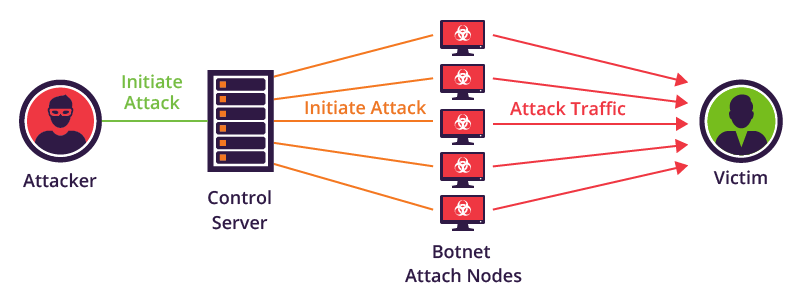
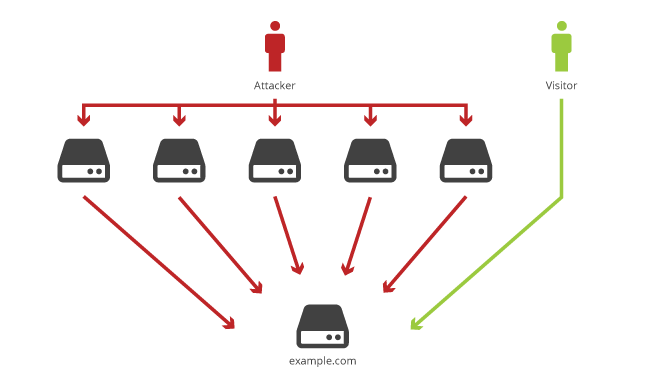
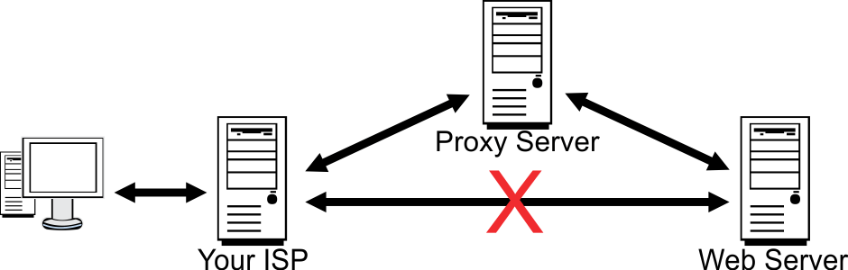

This is a collection of software robots, or 'bots' that creates an army of infected computers (known as zombies) that are remotely controlled by the originator. They can send spam emails, spread malware, use the computer as part of a DDOS, etc.
Distributed Denial of Service. This is where a server or network is overloaded with requests from machines (sometimes a botnet). The network is flooded with useless information that has to be processed, slowing down the service and sometimes causing it to come to a complete stop because the server can only handle a finite number of requests.
Malicious software that infects the computer. It takes the forms of viruses, worms, Trojans, spyware and adware. They can do things like re-format your hard-drive, alter or delete file, steal sensitive information, etc. (a worm differs from a virus because while the virus multiplies quickly to remove data, the worm slowly moves through the system).
Pharming is where a website is stolen to build a fake version. The hacker then sends a threat with a link to the website which makes the user enter their details, which can be stolen by the hacker. This is often done with businesses such as banks.
Phishing is where fake emails, texts, website, etc. are used to look like authentic companies. They're used by criminals to manipulate personal information from the user.
The process which criminals gain access to your computer. They can find weaknesses in pre-existing or zero day bugs in the user's computer and exploit them to gain access to the user's private data, and gain access rights enabling them to install a Trojan or other malware.
A firewall is software or hardware that monitors and controls incoming and outgoing network traffic of
the computer. Using predetermined security rules, the firewall can block and allow certain connections.
Firewalls are usually used as a barrier between trusted networks and untrusted networks. An example of
this would be a firewall between the user's system on a LAN and their connection to the internet. There
can be host or network firewalls. Network firewalls filter traffic between two or more networks while
host firewalls control traffic in host computers.
A proxy is an intermediary server that is placed between the system requesting a connection to the network and the network. This provides anonymity and security for the user because the network traffic is encrypted and only goes to the proxy server which then relays the traffic to its destination. This makes it more difficult for a hacker to determine the origin of the connection because the IP is masked and the connection will be encrypted and untraceable.

Encryption is the act of encoding data to ensure that it cannot be understood by anyone other than the
intended recipient. The encryption of data can be done using symmetric or asymmetric methods.
Click here to see more on encryption